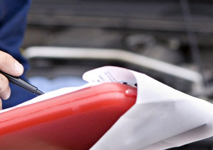

Световые сигналы дальнобойщиков (H2)
Дорога всегда таит в себе большую опасность. И здесь, без взаимовыручки, бывает очень сложно. Особенно ценится она при непростых дорожных условиях.
Взаимодействие и вежливость
– это не только помощь сломавшемуся или застрявшему где-либо водителю, но и своеобразные жесты и знаки во время движения.
Общаться словами или руками
, конечно, в автомобиле неудобно, поэтому, существуют специальные световые
предупредительные сигналы
, которые помогают избежать серьезных проблем.
Подпись под фото для СЕО. Название картинки или ресурс, с которого она была взята
Включение правоко поворотника H2
Дорога всегда таит в себе большую опасность. И здесь, без взаимовыручки, бывает очень сложно. Особенно ценится она при непростых дорожных условиях.
Взаимодействие и вежливость
– это не только помощь сломавшемуся или застрявшему где-либо водителю, но и своеобразные жесты и знаки во время движения.
Общаться словами или руками
, конечно, в автомобиле неудобно, поэтому, существуют специальные световые
предупредительные сигналы
, которые помогают избежать серьезных проблем.
Как поменять щетки стеклоочистителя H2

Подпись под фото для СЕО. Название картинки или ресурс, с которого она была взята
Дорога всегда таит в себе большую опасность. И здесь, без взаимовыручки, бывает очень сложно. Особенно ценится она при непростых дорожных условиях.
Взаимодействие и
вежливость – это не только помощь сломавшемуся или застрявшему где-либо водителю, но и своеобразные жесты и знаки во время движения. Общаться словами или руками
,
конечно, в автомобиле неудобно, поэтому, существуют специальные световые предупредительные сигналы , которые помогают избежать серьезных проблем.
Дорога всегда таит в себе большую опасность. И здесь, без взаимовыручки, бывает очень сложно. Особенно ценится она при непростых дорожных условиях.
Взаимодействие и
вежливость – это не только помощь сломавшемуся или застрявшему где-либо водителю, но и своеобразные жесты и знаки во время движения. Общаться словами или руками
,
конечно, в автомобиле неудобно, поэтому, существуют специальные световые предупредительные сигналы , которые помогают избежать серьезных проблем.
Дорога всегда таит в себе большую опасность. И здесь, без взаимовыручки, бывает очень сложно. Особенно ценится она при непростых дорожных условиях.
Взаимодействие и
вежливость – это не только помощь сломавшемуся или застрявшему где-либо водителю, но и своеобразные жесты и знаки во время движения. Общаться словами или руками
,
конечно, в автомобиле неудобно, поэтому, существуют специальные световые предупредительные сигналы , которые помогают избежать серьезных проблем.
Как заменить мастер-класс на видео H2
Подпись под фото для СЕО. Название картинки или ресурс, с которого она была взята
Дорога всегда таит в себе большую опасность. И здесь, без взаимовыручки, бывает очень сложно. Особенно ценится она при непростых дорожных условиях.
Взаимодействие и
вежливость – это не только помощь сломавшемуся или застрявшему где-либо водителю, но и своеобразные жесты и знаки во время движения. Общаться словами или руками
,
конечно, в автомобиле неудобно, поэтому, существуют специальные световые предупредительные сигналы , которые помогают избежать серьезных проблем.
Дорога всегда таит в себе большую опасность. И здесь, без взаимовыручки, бывает очень сложно. Особенно ценится она при непростых дорожных условиях.
Взаимодействие и
вежливость – это не только помощь сломавшемуся или застрявшему где-либо водителю, но и своеобразные жесты и знаки во время движения. Общаться словами или руками
,
конечно, в автомобиле неудобно, поэтому, существуют специальные световые предупредительные сигналы , которые помогают избежать серьезных проблем. Дорога всегда
таит
в себе большую опасность. И здесь, без взаимовыручки, бывает очень сложно. Особенно ценится она при непростых дорожных условиях.
Включение левого поворотника H3
Если ваш радиатор сделан из меди, запаять его не составит существенного труда. Для этих целей подойдет припой с невысокой температурой плавления ПОС-60.
Включение левого поворотника H4
Если у вас латунный радиатор, то можно использовать припой ТОС-40. Он более тугоплавкий, но нужно дольше прогревать место пайки, чтобы повысить эффективность и
качество работы.
- Электрический паяльник, мощность 100-150ВТ;
- Свинцово-оловянный припой;
- Газовая горелка;
Прогрейте поврежденное место при помощи газовой горелки, перед нанесением припоя, а затем наложите слой жидкой канифоли. Она поможет получить лучшее сцепление
припоя
с поверхностью. После этого, пока радиатор не остыл, быстро наложите кусочки припоя и размажьте их по зачищенной площади поврежденного участка равномерно, с
помощью
паяльника.
- Хлористый калий 56% от состава;
- Хлористый литий 23%;
- Поваренная соль (Хлористый натрий) 7%;
Нужно помнить, что пайкой проблема не решается, а всего лишь откладывается на какой-то срок. Все это лишь временно закрывает течь.
Если «заглушить» соты, то также как и в случае с использованием герметика, функции радиатора значительно снизятся, и автомобиль будет больше
нагреваться.
После того, как радиатор начал течь, перед автолюбителями всегда возникает резонный вопрос: приобрести новый.
Очень часто бывает, когда впереди идет большегрузная фура, и нет возможности ее обогнать, так как из-за ее размеров ничего не видно. Все водители
дальнобойщики, это
настоящие профессионалы своего дела, и никто как они знают о культуре поведения на дороге.
Включение левого поворотника – ну а он говорит, что обгонять нельзя, так как идет встречный автомобиль.
Очень часто бывает, когда впереди идет большегрузная фура, и нет возможности ее обогнать, так как из-за ее размеров ничего не видно. Все водители
дальнобойщики, это
настоящие профессионалы своего дела, и никто как они знают о культуре поведения на дороге.
Когда же обгоняет водитель фуры, то он может не видеть того, завершился обгон, или нет.
Очень часто бывает, когда впереди идет большегрузная фура, и нет возможности ее обогнать, так как из-за ее размеров ничего не видно. Все водители
дальнобойщики, это
настоящие профессионалы своего дела, и никто как они знают о культуре поведения на дороге.
Очень часто бывает, когда впереди идет большегрузная фура, и нет возможности ее обогнать, так как из-за ее размеров ничего не видно. Все водители дальнобойщики,
это
настоящие профессионалы своего дела, и никто как они знают о культуре поведения на дороге.
Кроме световых сигналов, опытными дальнобойщиками, нередко используются другие жесты. Например, водитель, чтобы обогнать фуру, начинает «высовываться» из нее,
фура делает небольшое движение в левую сторону. Это говорит о том, что обгон сейчас нельзя проводить. Такое движение, обычно, происходит внутри своей полосы, и
поэтому авария исключена.
Если же для обгона препятствий нет, то фура наоборот, прижимается к обочине и немного снижает скорость. Ну а чтобы поблагодарить дальнобойщика за это, принято
поморгать аварийкой, или быстро переключить правый и левый поворотники.